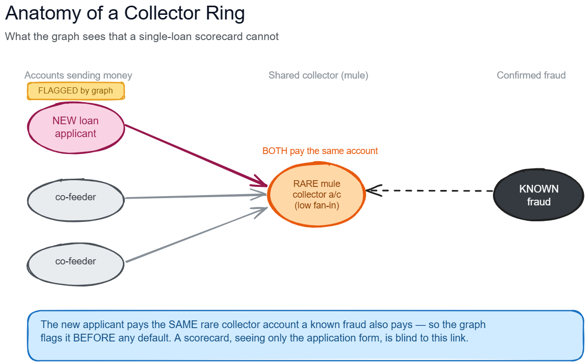

I asked whether pre-disbursal money flow could expose coordinated loan fraud that an application-only scorecard cannot see. The result was an explainable precision overlay for fraud review, built across 224.8 million accounts and 1.31 billion transfer edges.
- Cast fraud proximity as bidirectional, three-hop, time-respecting BFS and pruned the working graph roughly 20× while retaining about 80% applicant coverage.
- Implemented shared-mule and cash-out signals, weighted PageRank, label propagation, three-cycle motifs, and camouflage-resistant Fraudar blocks in PySpark.
- Hand-rolled Bahmani (2 + 2ε) greedy peeling with 1 / log2(fan-in + 5) collector weights; reliable HDFS checkpoints truncated iterative RDD lineage.
- Delivered a ranked investigation queue with plain-English reasons and ring diagrams for each high-risk case.

01 Build the monthly money-flow graph
02 Anchor every feature before disbursal
03 Traverse rare, time-valid paths
04 Score proximity, entities, and motifs
05 Rank and explain the review queue
Scale & systems
224.8M nodes · 1.31B transfers
Ran on Cloudera Spark 3.3 / Hadoop with HDFS checkpointing, hub controls, degree gates, and end-to-end QC.
Signal quality
12.1% vs 0.155% fraud rate
The closest one-hop band reached roughly 81× the book rate; the shipped queue's top 1% delivered 5.49× mean lift.
Validation
Feature ceiling, not model ceiling
A separate WOE–IRLS scorecard over a larger feature set found no reliable LOAO gain over the transparent blend.
The important negative result:
about 83% of confirmed frauds had no seed-anchored money-flow signal. The graph is therefore a
high-precision overlay, not a replacement for the existing behavioural model; the next gain must come
from new identity, device, or sourcing edges rather than a more complex ranker.